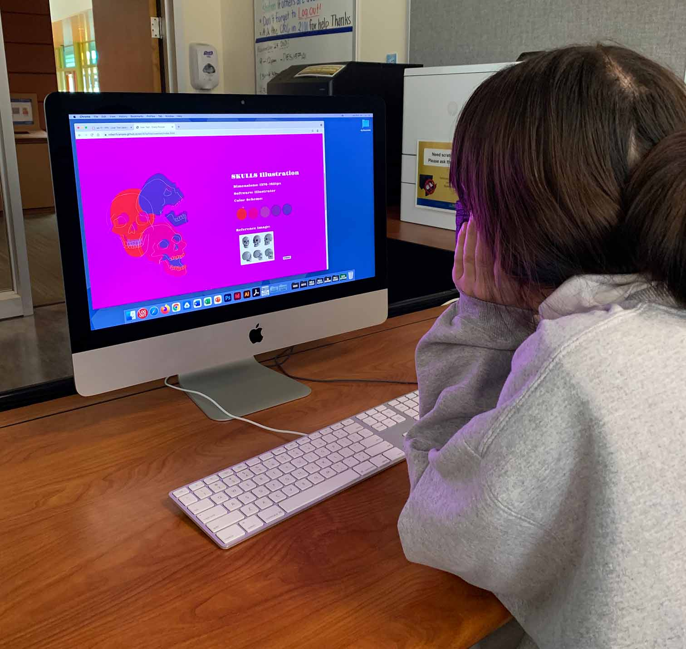
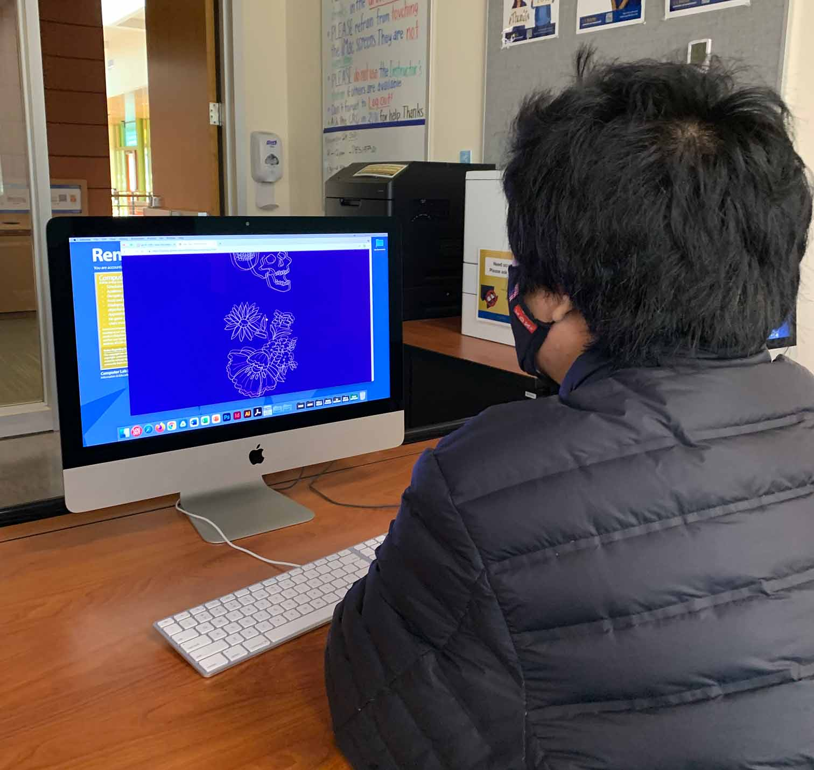
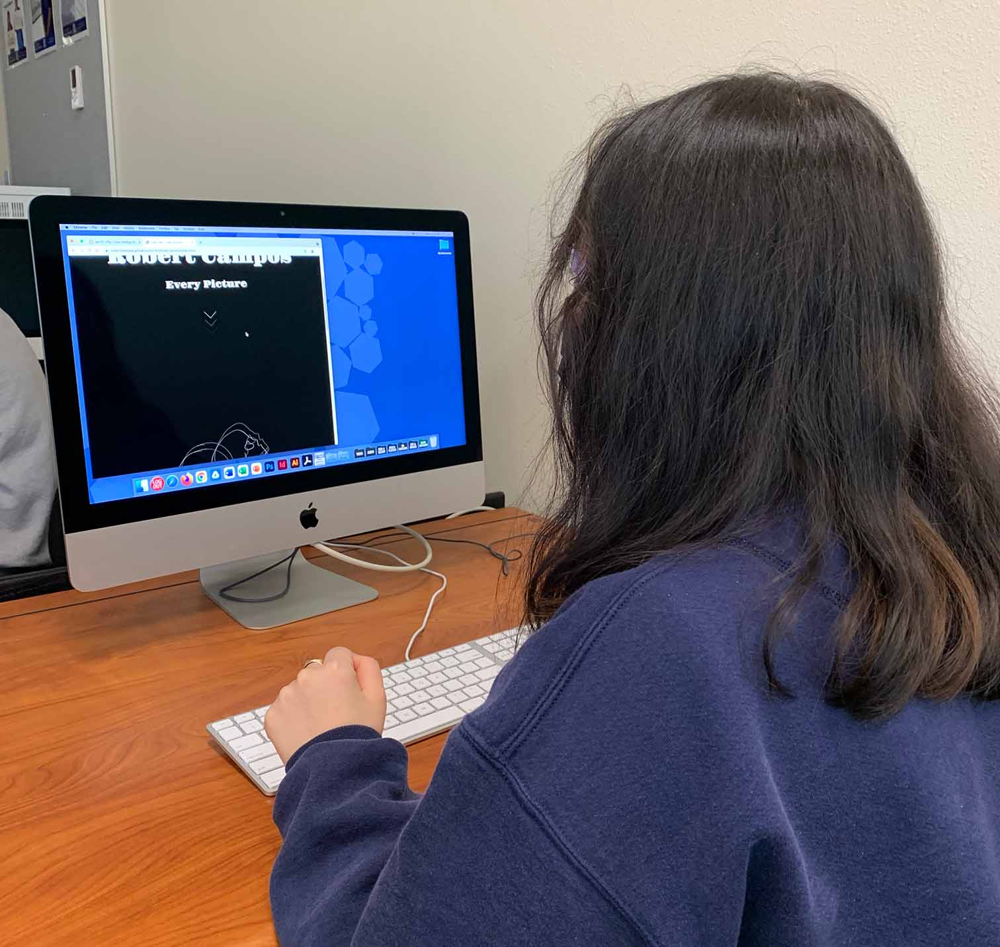

User Test-Sienna
When Sienna opened the website she was able to easily navigate through and complete the tasks I had included. She activated the effects, opened the image descriptions, and closed the descriptions. After the user test I asked her about her thoughts on opening and closing the descriptions, which she thought weren't very difficult and were pretty self explanatory. I also asked her about the animations, which she enjoyed and even recommended I add more interactive elements. When I asked her about the typeface I used, she thought it was fitting with the content. She did suggest I pair the typeface with another, specifically in the descriptions so it would be easier to read and contrast with the header. I plan on adding another typeface to pair with the header typeface, like she recommended.

User Test-Leon
When Leon opened the website he was able to complete the tasks very easily. When I asked him about the typeface he thought it was hard to read, and suggested that I consider a different typeface. He also mentioned that there was a large amount of space in the layout of the interface, and suggested that I utilize the space more. Another thing I noticed during the user test was that he tried to click the illustrations again when the descriptions were opened. When I asked him about that he told me the pointer cursor had confused him and he thought there was more that would happen if he clicked the images. He suggested that I change the cursor once the image descriptions are open, which I plan doing.

User Test- Rachel
When Rachel was completing the tasks she was able to complete them quickly, but later on she did tell me that she was confused at first. She told me that it was not that easy to figure out that the user was meant to click the images. She suggested that there could be a message in the header that would let the user know what to do. Rachel also had an issue with the layout when the window was a smaller size, but mentioned that when the window is opened at the correct size everything looks nice. When I asked her about the animations, typeface, and layout; she told me that those elements of the design worked well so far. I plan on taking her advice about adding a message in the header so the user knows to click the images in order to open the descriptions.
